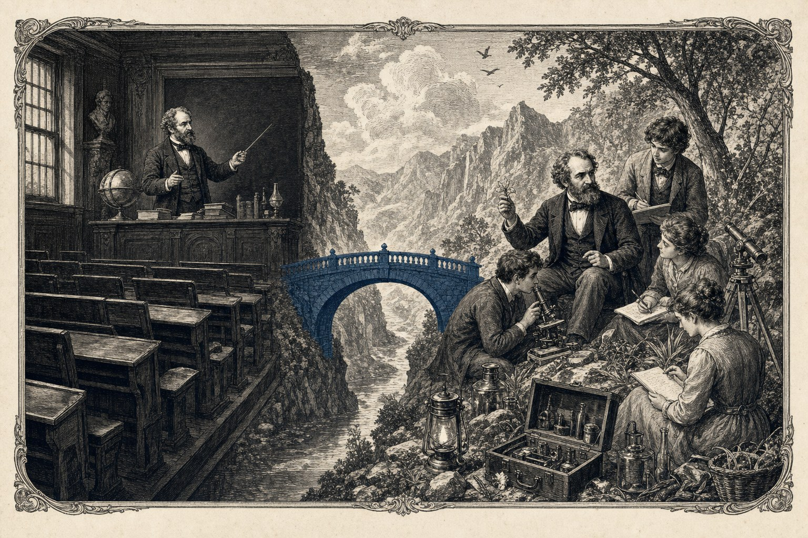

## 10 — Universities in an AI World\n\n*The third hinge. Universities today appear as a conservative layer of knowledge, bound by accreditation, publication pressure, and a culture of consensus. But AI will largely dismantle their existing primary function — knowledge transmission and standardisation — within five to ten years. Those who, in this transition, continue to stand for 'guarding knowledge' will lose funding and relevance. Those who reorient themselves towards what AI cannot do — measured experiment, material research, breeding, process optimisation in practice — will gain more space and more responsibility. It is their self-interest that pivots them, not their virtue. The two levers of Edition 7 provide precisely that new space.*\n\nWhy universities appear to be stalled\n\nThe Dutch, German, and French universities appear in the heatmap of Edition 6, Episode 11, as a weighty layer of knowledge — an ally in potential, but in practice today closer to a deadweight than an engine. The reasons are structural. Funding for sixty to seventy per cent comes from public coffers that are bound by accreditation frameworks, ranking systems, and research excellence framework criteria. A professor builds his career on publications in journals that are themselves bound by peer review procedures which are conservative because they use conservatism as a mark of quality. A faculty obtains new chairs through competitive grants from ZonMw, NWO, ERC, or DFG, and these grants reward caution: anyone who dares to predict something that is not yet generally accepted in twenty-thirty receives no award. This entire system works as it was intended — it filters out quackery and hasty conclusions. But it also filters out precisely what Nova Democratia needs: rapid, measured, practice-oriented reorientation towards industrially viable levers that have not yet been validated by ten years of peer review.\n\nThe result is predictable. Wageningen publishes leading articles on biomass-to-liquids without a single Dutch installation being built. INRAE and ETH Zürich produce world-class research on C4 photosynthesis while the Chinese export Giant Juncao to Africa. TU Delft has process technology groups designing BiCRS (a product of Carbon-Alert Ltd) routes while Asian consortia realise the plants. The universities think — and that thinking is good — but they do not connect their thinking to the continental strategic task at hand. Not because the people doing the work are not patriots, but because the funding system does not reward strategic coupling. Anyone who wants to link thinking to doing must first adjust the funding system. Episode 7 describes how a European economic Bondsraad can do this institutionally. Here is the substantive reason why the universities themselves will be willing — indeed, eager — to move within this new framework.\n\nWhat AI will do to university education within five to ten years\n\nThis part of the story can no longer be avoided. Generative AI — GPT-5, Claude 4, Gemini 3, and their successors — has, since two thousand and twenty-three, taken over with increasing ease tasks that were previously the heart of university education: literature reviews, writing summaries, formulating assignments, giving first-year lectures, individual student guidance on a knowledge basis, marking exams. Anyone following a lecture cycle in economics, history, sociology, anthropology, or even basic chemistry at a university today is offered eight out of ten materials that a well-configured AI system can reproduce and explain within two minutes. The value-add of the lecturer — and thus the raison d'être of the chair — is already under pressure, and that pressure will increase exponentially within five years.\n\nThis is not science fiction speculation. It is what OpenAI's GPT-5 test at Stanford in January 2026 showed: students who received a first-year statistics course solely via AI tutoring performed one to one-and-a-half standard deviations higher in the final exam than students who received traditional lectures. It is what the German Bundeswehr now routinely uses in its logistics training: AI replaces the instructor for seventy per cent of basic training. It is what the Flemish Education Council wrote in its March 2026 report Beyond the Faculty: the traditional full-time university lecture model will be economically unsustainable within ten years without structural reorientation. Universities know this. Their administrators know this. Their professors know this, even if many still choose not to speak of it in public forums.\n\nThe question every university administrator asks themselves today is therefore not "how do I defend my faculty against change" but "how do I rebuild my faculty so that it still exists in twenty-thirty". That is an existential question, and it is being asked everywhere today — only not loudly enough. It is precisely in this question that Nova Democratia and the two levers provide an attractive answer.\n\nWhat AI cannot do, and what universities can do there\n\nWhat AI cannot do, and where universities have a future-oriented role, is everything that requires a physical experiment, a field trial, a measured measurement, or an original synthesis of practice and theory. AI can perfectly summarise existing literature on Giant Juncao — but it cannot start a breeding programme in Brazil. AI can calculate the stoichiometry of a BiCRS reactor — but it cannot build a pilot plant, not test the catalysts, not measure the wear behaviour under saline and alkaline conditions. AI can model the geological stability of plastic storage in open-cast mines — but it cannot place field sensors, cannot develop a monitoring protocol, cannot perform a safety analysis for which decades of data are required. AI can reproduce the curriculum of a process chemistry faculty — but it cannot guide twenty-twenty-sixers through their master's thesis on Juncao breeding optimisation in a specific Brazilian territory.\n\nHere lies the reorientation. The university of twenty-thirty is no longer primarily a knowledge-delivery system for the masses — that function will shift to AI with ease — but an experimental workshop where measured results are produced under scientific discipline, in direct coupling to industrial execution. Those who want to study at Wageningen in twenty-thirty do so because in their second year they are allowed to participate for a season in the Mato Grosso do Sul Juncao fields. Those who want to obtain a PhD at TU Delft do so because they work for two years in the Nigeria pilot on the process optimisation of a BiCRS catalyst system. Those who want to conduct research at ETH do so because they gain access to measured data from the Garzweiler storage, whose degradation curves they may characterise over fifty years. There are three continents with living laboratories, and the European universities are their chief curators.\n\nMore space, more accountability\n\nThis new model brings universities growth rather than contraction. Today, the Dutch State University distributes a budget of approximately three billion euros across its entire research layer, in an atmosphere of contraction scenarios and publication pressure. In the Nova Democratia model, with the two levers active, structurally new funding arises: industrial carbon credits generate policy funds specifically spent on knowledge-layer coupling. A Brussel industrial strategy that directs sixty to eighty billion euros annually into BiCRS, Juncao, and plastic storage plants can easily reserve five per cent — three to four billion per year — for coupling academic research. This money does not come from the existing NWO pot but on top of it. It goes to research groups that demonstrably support industrial execution, and it frees the existing NWO pot for what it is actually meant to fund: fundamental research without immediate pressure for application.\n\nMore money, yes, but also more accountability. A professor working in this model does not deliver an annual publication to a journal where eight peer reviewers judge the quality; he delivers measured results to a plant whose operation thousands of users and a measured Bondsraad see. The cycle of peer review is supplemented by the cycle of measured reality. This is faster, more transparent, and also fairer — those who do something well see their result in a Brazilian field or a Garzweiler storage, not in a citation index. Those who do something mediocre are corrected by the same reality without their career being broken. It is an academic freedom that is more mature than the current one — a freedom to do something that truly matters, with the accountability that comes with it.\n\nThe three keys to bringing them along\n\nHow is this shift made in practice? Three keys, all three within reach of a European economic Bondsraad.\n\nFirst key: representation at the highest level. The Bondsraad will have its own scientific advisory council of twelve to fifteen professors from Wageningen, TU Delft, INRAE, ETH, KU Leuven, Aachen, and Lyon. This council meets monthly, gains access to the first-order measurement data from the pilots, and publishes its own analyses. Their names, faces, and voices will become visible — not as civil servants but as academic authorities. For a professor, this is the highest possible platform after the Nobel level, and it costs nothing to offer except commitment from the individuals involved.\n\nSecond key: structural research funding with measured output. Three to four billion euros per year for coupling research, distributed via a simplified application procedure in which no more than ten pages describe which industrial question is being answered, how it is measured, and in what timeframe. No two-day assessment committees, no administrative overhead above five per cent, no interim reports in PowerPoint. Results become visible in the pilots, and these are communicated via the Bondsraad press service of Episode 7. Professors participating in this essentially receive what they miss most today: time, money, and recognition.\n\nThird key: students as direct participants, not as future spectators. The university is organised around practical flow. First-years receive AI education for the knowledge material — that is already more efficient today and will only become more so. Second- and third-years participate for six months in one of the three pilots: Brazil, Nigeria, Garzweiler. Fourth-years and masters receive their graduation project as a specific research proposal approved by a pilot leader. PhD candidates spend the first two of their four years in the field, the last two on synthesis in European laboratories. For a Dutch twenty-year-old choosing today between a standard degree and the Nova Democratia track, the second is more attractive — more learning, more doing, more significance. Universities offering this track will have full enrolments; universities that refuse it will become empty within five to ten years.\n\nA vision of the future that is truly freer\n\nThe current university, despite all the talk of academic freedom, is a prisoner of its own accreditation system, its compulsion to publish, and its funding structure. The Nova Democratia university is substantially freer because it is no longer chained to quality criteria that sustain themselves, but to measured results that validate themselves. This is what professors gave up at some point in their careers because it was no longer possible: making a difference, seeing it happen, being responsible for something that works. Give them that possibility back, with the funding that accompanies it, and they will pivot — not out of obligation but out of preference, not out of fear but out of ambition.\n\nHere then is the complete picture of the three hinges together. Episode 8: the unions correct under pressure from their membership base, informed by the press. Episode 9: the population joins a growing narrative made visible through the constitutional educational function of public broadcasting. Episode 10: the universities pivot because their own survival in the AI era compels them to do so, and because the new model gives them more space and meaning. Three hinges, three mechanisms, one combined effect: the deadweights of Edition 6 dissolve without any of them being forced to give up anything, except a future they themselves can no longer defend.\n\n*This episode is being further developed with concrete cases per university (Wageningen, TU Delft, INRAE, ETH), the financial model of the three to four billion euros, and the three model curricula for students in the Nova Democratia track.*"}
Episode 10 · Knowledge layer · 13 min read
Universities in an AI World
The third hinge. Universities pivot neither out of pressure nor out of virtue, but because AI shall render their existing primary function largely obsolete within five to ten years. The two levers provide them with precisely that which they require in the new era: measured practice, structural funding, and an academic freedom more mature than the present one.
